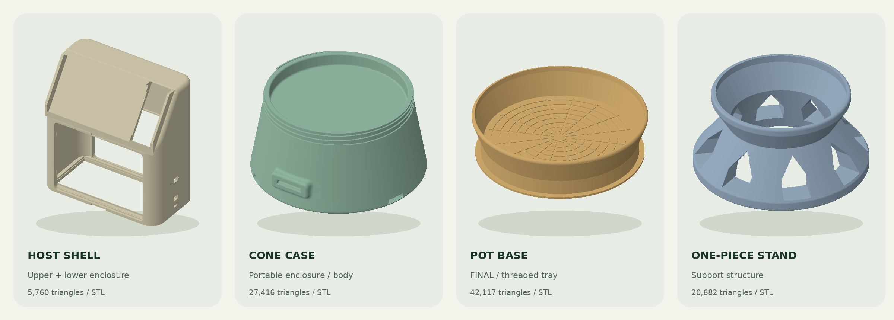

PI TERMINAL / LAB
MATERIAL STUDIES · 01—04
项目 README ↗

FIG.
01
/ MESH STUDY
LOCAL GEOMETRY · NO CDN
拖动旋转 · 滚轮缩放 · 方向键旋转 · Home 重置
重置视角
＋
−
分离上下壳
正在读取模型…
正交投影 / 按需绘制 / 无自动旋转
源文件 ↗
这是一份几何预览，不是工程仿真或打印验收。GitHub 文件预览不运行本页；请使用本地 HTTP 服务。